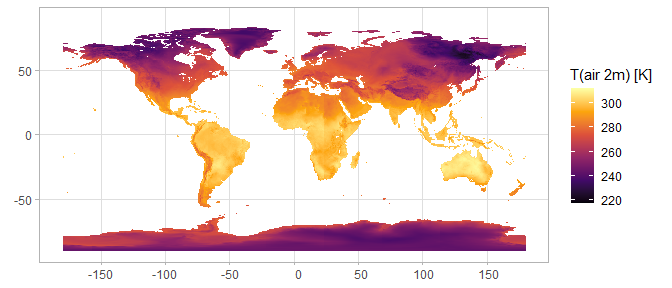

Overview
The Copernicus Climate Change Service (C3S) has the mission of providing information about the past, present and future climate, as well as tools to enable climate change mitigation and adaptation strategies.
The C3S Climate Data Store provides open and state-of-the-art climate data to scientists. This package allows users to download data from the data store and handle it in R.
Installation
Install CRAN release:
install.packages("CopernicusClimate")Install latest developmental version from R-Universe:
install.packages("CopernicusClimate", repos = c('https://pepijn-devries.r-universe.dev', 'https://cloud.r-project.org'))Example
In order to download data from C3S you first need to submit a request with cds_submit_job(). After your request has been processed by C3S, you can download the data with cds_download_jobs(). This workflow is demonstrated in the code snippet below. For a more detailed description of the workflow see vignette("download").
library(CopernicusClimate)
library(stars) ## For loading spatial raster data
library(ggplot2) ## For plotting the data
if (cds_token_works()) { ## Make sure there is an operational access token
## Submit a download job:
job <-
cds_submit_job(
"sis-agrometeorological-indicators",
statistic = "day_time_mean",
variable = "2m_temperature",
year = "2025",
month = "01",
day = "01")
## Actually download the data:
data_file <- cds_download_jobs(job$jobID, tempdir())
## Unzip the downloaded data:
data_unzipped <- unzip(data_file$local, list = TRUE)
unzip(data_file$local, exdir = tempdir())
data_stars <- read_mdim(file.path(tempdir(), data_unzipped))
## Plot the downloaded data
ggplot() +
geom_stars(data = data_stars) +
coord_sf() +
labs(fill = "T(air 2m) [K]", x = NULL, y = NULL) +
scale_fill_viridis_c(option = "inferno", na.value = "transparent")
}
More of Copernicus
More R packages for exploring other Copernicus data services:
- CopernicusMarine Dedicated to marine datasets
Code of Conduct
Please note that the CopernicusClimate project is released with a Contributor Code of Conduct. By contributing to this project, you agree to abide by its terms.